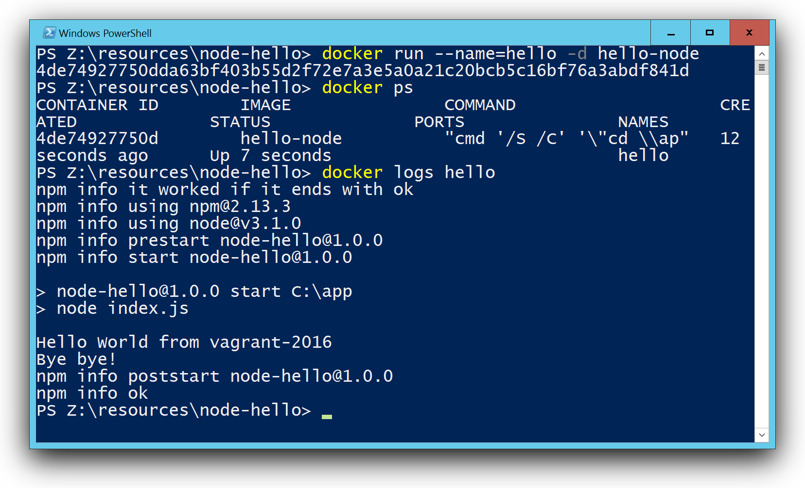

Last week Microsoft has released a technical preview of the upcoming Windows Server 2016 with a first running version of the Docker daemon for Windows.
So everybody who is interested in Docker on Windows is now able to get a first impression of the current work. You either need a VM running in Azure with Windows 2016 TP3 or you try Windows 2016 TP3 locally in a VM.
Setup Docker on Windows
In the case you only have a vanilla Window 2016 TP3 machine without Docker installed, you can follow this Quick start guide. Open a Powershell as an administrator and run these commands:
wget -uri http://aka.ms/setupcontainers -OutFile C:\ContainerSetup.ps1
C:\ContainerSetup.ps1
This script will download and install the Docker daemon and a base image. Now the Docker daemon should be up and running as well as a first Docker base image windowsservercore. You can check that you are working with a Windows Docker daemon with the command docker version.
The first own Windows Docker image
As a first example I want to show how to create a Node.js Docker image for Windows. I started with the official iojs Dockerfile and ported that to Windows commands. There are three steps to do:
- download the Node.js package
- install the package
- use the interpreter as the CMD
This is my Windows version of the Dockerfile:
FROM windowsservercore
ENV NPM_CONFIG_LOGLEVEL info
ENV IOJS_VERSION 3.2.0
RUN powershell -Command "wget -Uri https://iojs.org/dist/v%IOJS_VERSION%/iojs-v%IOJS_VERSION%-x64.msi -OutFile iojs.msi -UseBasicParsing"
RUN msiexec.exe /q /i iojs.msi
CMD [ "iojs" ]
To try it yourself, open up an editor and put these lines into a file Dockerfile and save it. Then build the Docker image with
docker build -t iojs .
docker tag iojs:latest iojs:3.2.0
Now you have your own iojs Docker image for Windows. The second command also tags the iojs:latest with the version number of io.js. You can check your available images with
docker images
You can check the Docker image by running the installed Node.js runtime and retrieve the iojs version
PS C:\Users\vagrant> docker run -it iojs iojs --version
v3.2.0
OK, we now have the latest io.js running in a Windows Docker container.
Create an iojs:onbuild Docker image
The official iojs Docker image has a nice second Dockerfile that uses the ONBUILD keyword. This Dockerfile can be used to add your Node.js application into a new Docker image very easily. You do not need to have Node.js installed on your host.
Again I started with the official iojs:onbuild Dockerfile and ported it to Windows.
This is the Linux version of the Dockerfile:
FROM iojs:3.1.0
RUN mkdir -p /usr/src/app
WORKDIR /usr/src/app
ONBUILD COPY package.json /usr/src/app/
ONBUILD RUN npm install
ONBUILD COPY . /usr/src/app
CMD [ "npm", "start" ]
It uses WORKDIR to set the current directory for all further commands. On Windows this and the COPY commands seems to be a work in progress. The current behavior is slightly different to Linux containers, but I found a workaround.
This is my current Windows version of the onbuild Dockerfile that works with the current version of the Windows docker daemon.
FROM iojs:3.2.0
RUN mkdir \app
WORKDIR /app
ONBUILD COPY package.json package.json
ONBUILD RUN npm install
ONBUILD COPY . .
CMD [ "npm.cmd", "start" ]
Now create the Docker image for this Dockerfile with this command:
docker build -t iojs:onbuild .
Put your Node.js app into a Container
Now we create a simple Node.js application and create a Windows Docker image with it. We now create three files
- package.json - with the start command and optional dependencies
- index.js - with the application source code
- Dockerfile - to build the Docker image
package.json
{
"name": "hello-node",
"version": "0.0.1",
"description": "Hello world from io.js in a Windows docker container",
"main": "index.js",
"scripts": {
"start": "node index.js",
"test": "echo \"Error: no test specified\" & exit 1"
},
"author": "Stefan Scherer",
"license": "MIT"
}
index.js
As a simple example we just print a message, wait five seconds and print another message and exit the Node.js application.
'use strict';
const os = require('os');
console.log('Hello World from', os.hostname());
setTimeout(function () {
console.log('Bye bye!');
}, 5*1000);
Dockerfile
The Dockerfile for this example is quite simple. It just uses the Windows version of the iojs:onbuild Docker image:
FROM iojs:onbuild
All further steps to add the Node.js code and run npm install is already in this Docker image. We now install the Node.js application and create a new Container image with name hello-node.
docker build -t hello-node .
Now run the application with
docker run -t hello-node
You also can run the container in detached mode with
docker run --name=hello -d hello-node
and check the output while running the container or afterwards with
docker logs hello

So as you can see it is amazing what is already possible with Docker on Windows. I hope you enjoyed this blog post. Please feel free to add comments below and share this post if you like.
Conclusion
The technical preview gives us the possibility to get in touch with Docker for Windows for the first time. There may be some rough edges here and there, but I think there will be a fast progress to run Docker on Windows as smooth as with Linux containers.